3. Fossil occurrences, niche modeling and last occurrences (45 min)
In this practical, we explore niche models, and how you can build your own mass extinction (BYOME) using stratigraphic paleobiology.
Introduction
A classic question in Stratigraphic Paleobiology is how stratigraphic architectures shape where we can find fossils, how abundant they are, and how this changes our understanding of origination and extinction events.
For computational simplicity, here we group first/last occurrences of a group of taxa and fossil occurrences of a single taxon together and refer to them as “event type data”, which is similarily transformed by stratigraphic effects (Hohmann and Jarochowska 2025).
Event type data encompasses all types of data that are a loose, unordered collection of events that are associated with a time/age or a stratigraphic position. As such, sampling locations, times of extinctions, and sequence stratigraphic boundaries are all examples of event type data.
For this practical, we focus on the most relevant event type data for paleontologists, which is fossil abundance and the derived first and last occurrences. We explore how stratigraphic and ecological effects change fossil abundance, how stratigraphic architectures generate artefactual peaks of last occurrences that can be mistaken for mass extinctions, and explore some implications for geochronology, more specifically the precision of biostratigraphy.
Coding cheat sheet
Simulating fossil occurrences
Fossil locations or ages can be simulated using the p3 function if the rate of fossil occurrences is constant:
library(StratPal)library(admtools)pos ="2km"adm =tp_to_adm(t = scenarioA$t_myr, h = scenarioA$h_m[,pos],T_unit ="Myr",L_unit ="m")rate =300# 300 fossils per Myrp3(rate = rate, from =0, to =1) |>hist(main ="Fossil abundance",xlab ="Time [Myr]",ylab ="# Specimens")
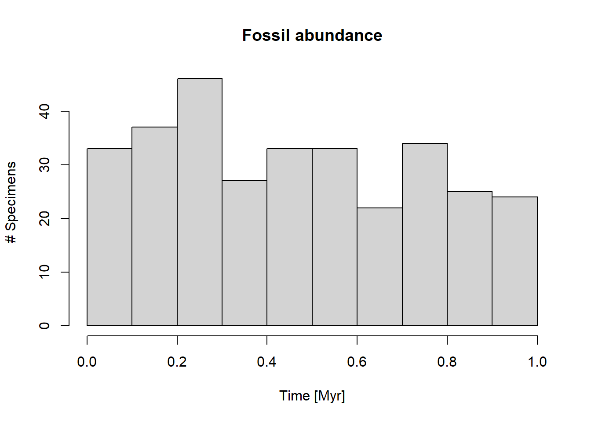
For time-variable rates see p3_var_rate.
Transforming fossil occurrences to the stratigraphic domain
You can transform fossil ages directly using time_to_strat:
foss_per_myr =300# fossils per Myrp3(rate = foss_per_myr, from =min_time(adm), to =max_time(adm)) |># constant rate in time domaintime_to_strat(adm, destructive =TRUE) |># transform into depth domainhist(xlab =paste0("Stratigraphic height [",get_L_unit(adm),"]"), # plotmain ="Fossil abundance 2 km offshore",ylab ="# Fossils",breaks =seq(from =min_height(adm), to =max_height(adm), length.out =20))
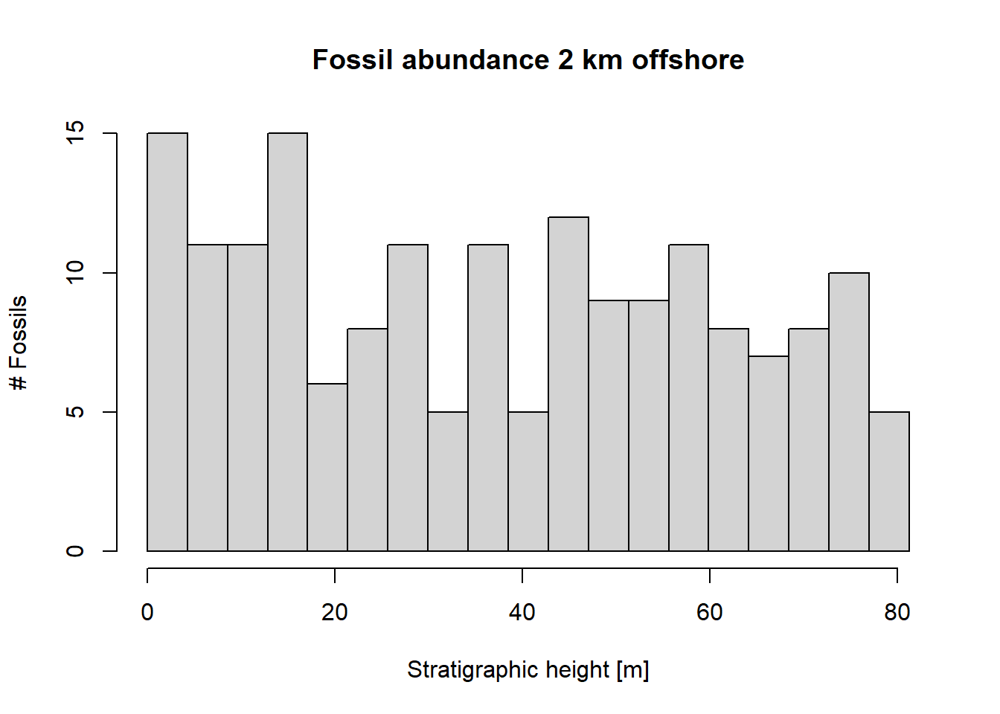
Note the option destructive = TRUE for time_to_strat. It makes sure fossils that coincide with hiatuses are destroyed.
Defining niche models
You can define simple niche models with the functions snp_niche or bounded_niche:
my_niche =snd_niche(opt =10, # preferred water depth tol =5, # tolerance to water depth fluctuationscutoff_val =0) # cut off negative values - the taxon does not survive on land
To visualize the niche you can plot it using the following code:
max_wd =60# maximum water depthx =seq(-2, max_wd, by =0.1)plot(x, my_niche(x),type ="l",xlab ="Water depth [m]",ylab ="Collection probability",main ="Collection probability of taxon")
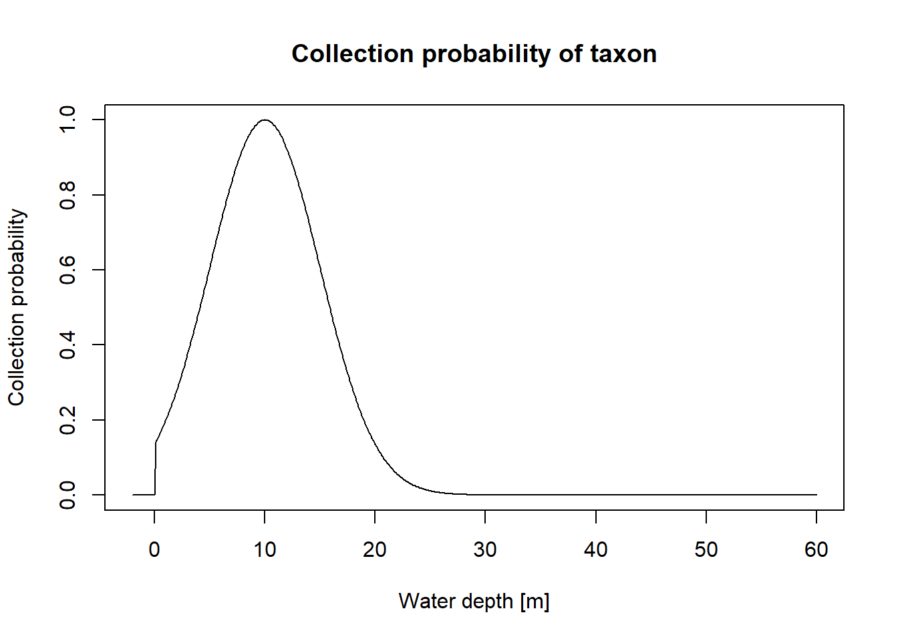
Apply niche models
To apply a niche model, we need two components: A niche definition that specifies the niche of a taxon along a cline (water depth in this example - this is the function we defined above), and a function that describes how the cline changes with time.
Cline
A cline is an environmental gradient, e.g. altitude is a cline important for plant diversity. Ecological niches are often defined in terms of distributions of occurrence probability along a cline.
To define a function that returns the water depth with time, you can use the following code:
pos ="2km"# position in the platform we want water depth fromt = scenarioA$t_myr # time steps where water depth is determined by the modelwd = scenarioA$wd_m[,pos] # water depth 2 km from shoregc =approxfun(t, wd) # use linear interpolation between known water depths
You can visualize this function using the following code:
plot(x = t,y =gc(t), type ="l", xlab ="Time [Myr]",ylab ="Water depth [m]",main ="Water depth 2 km offshore")
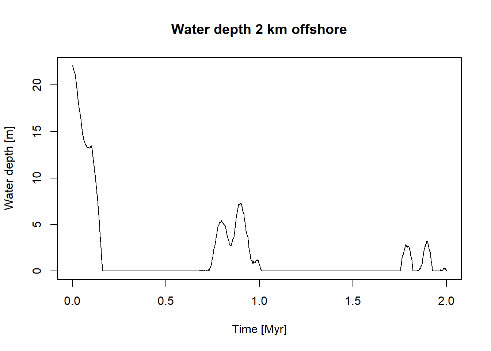
With both components (niche definition and cline change with time) defined, you can insert the niche model into the modeling pipeline via the function apply_niche:
p3(rate = foss_per_myr, from =min_time(adm), to =max_time(adm)) |># model occurrences based on constant rateapply_niche(niche_def = my_niche, gc = gc) |># apply niche modeltime_to_strat(adm, destructive =TRUE) |># transform into strat. domain, destroy fossils that coincide with hiatuses hist(xlab =paste0("Stratigraphic height [",get_L_unit(adm) ,"]"), # plot resultsmain ="Fossil abundance 2 km from shore",ylab ="# Fossils",breaks =seq(from =min_height(adm), to =max_height(adm), length.out =40))
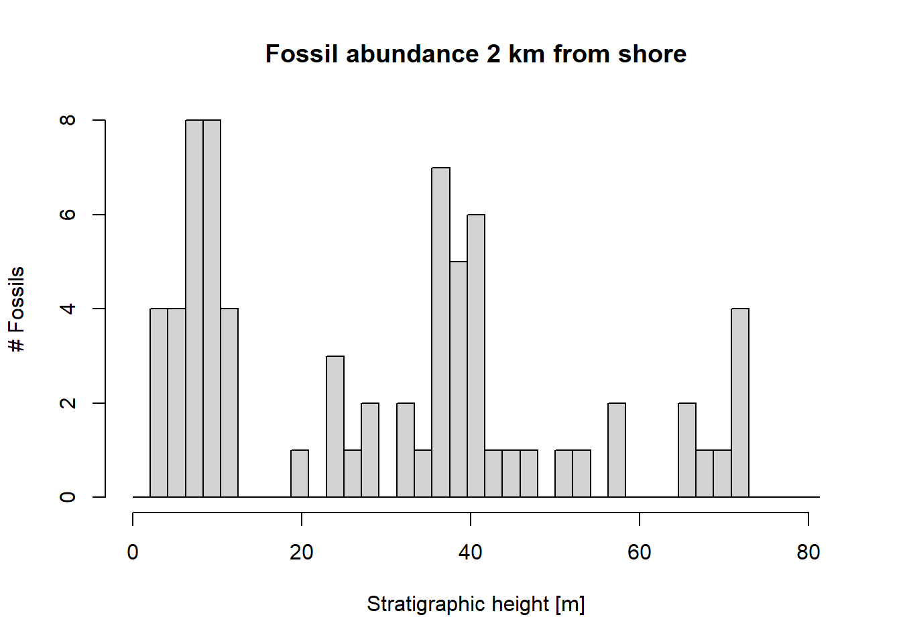
Simulating and transforming last occurrences
Timing of last occurrences can be simulated using p3 or p3_var_rate just as fossil occurrence (or any other type of “event” data). They can be transformed using time_to_strat:
rolo =100# rate of last occurrences [per Myr]p3(rate = rolo, from =min_time(adm), to =max_time(adm)) |># constant rate of last occtime_to_strat(adm, destructive =FALSE) |># non-destructive transformation!hist(xlab =paste0("Stratigraphic height [",get_L_unit(adm),"]"), # plot histogrammain ="Last occurrences 2 km offshore",ylab ="# Last occurrences",breaks =seq(from =min_height(adm), to =max_height(adm), length.out =20))
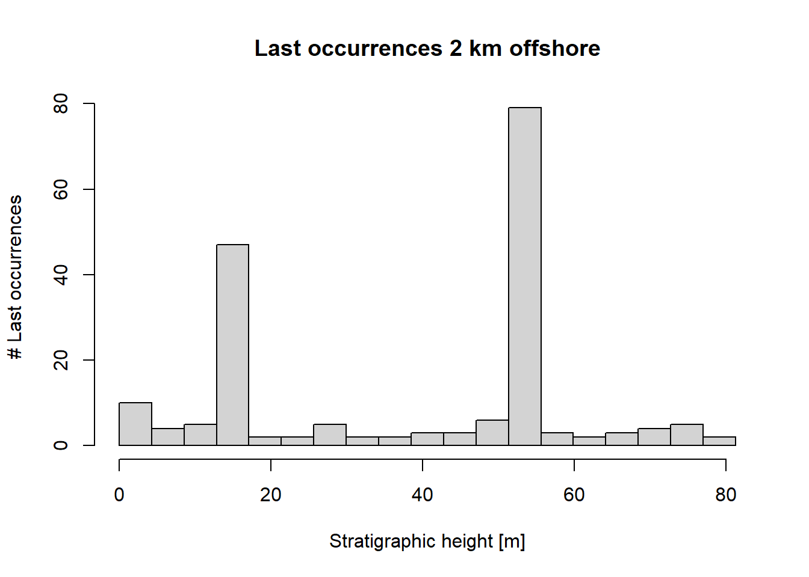
Note that we use the option destructive = FALSE in time_to_strat. This is because last occurrences during a hiatus will appear at the hiatus surface in the stratigraphic domain
Biostratigraphic precision (range offset)
Biostratigraphic precision is expressed as range offset, which is the difference between the true time of extinction and the last occurrence of a taxon. To determine it, you can use the wrapper function range_offset:
t_ext =1.5# true time of extinctionrate =10# fossil abundance (per Myr)r_offset =range_offset(t_ext = t_ext,rate = rate,adm = adm)r_offset
t h
0.583782 12.934267
This determines the range offset both in the stratigraphic domain (height difference between the last fossil found and the extinction horizon) and the time domain (time difference between the true age of extinction and the last preserved fossil). Here the stratigraphic range offset is 12.93 meters and the temporal range offset is 0.58 Myr. See ?range_offset for advanced usage, which includes the incorporation of variable rates, taphonomy, and ecology.
Tasks
Task 3.1: Fossil abundance in the stratigraphic domain
Simulate an abundant taxon, and transform the fossil ages into the stratigraphic domain.
At which locations and stratigraphic heights do you observe peaks in fossil abundance?
With which stratigraphic effects are these peaks associated?
Task 3.2: Ecological controls on fossil abundance
Define a niche for a taxon, and add the niche model to your pipeline.
How and why do your results change?
How could you misinterpret the results?
Task 3.3: Last occurrences and artefactual mass extinctions
Simulate last occurrences based on the assumption of a constant rate of last occurrences and transform them into the stratigraphic domain.
Where do you observe clusters of last occurrences?
With what stratigraphic effects are these locations associated?
How would you misinterpret the results in the absence of stratigraphic information?
Use your results to formulate a “stratigraphic null hypothesis” for clusters of last occurrences.
Task 3.4: Biostratigraphic precision and range offset
Explore how range offset changes with the true time of extinction, fossil abundance, and position along shore.
Where and why is biostratigraphic precision best/worst?
How do your results change when you add a niche model to your code?
Solutions
Solution Task 3.1: Fossil abundance in the stratigraphic domain.
Simulate an abundant taxon, and transform the fossil ages into the stratigraphic domain.
At which locations and stratigraphic heights do you observe peaks in fossil abundance?With which stratigraphic effects are these peaks associated?
We start by collecting all age-depth models for convenience.
adm_list =list() # storage for age-depth modelsdist =paste(seq(2, 12, by =2), "km", sep ="") # distances from shorefor (pos in dist){ # construct ADMs for all distances adm_list[[pos]] =tp_to_adm(t = scenarioA$t_myr, h = scenarioA$h_m[,pos],T_unit ="Myr",L_unit ="m")}pos ="12km"# position in the platform, to modifystopifnot(pos %in% dist) # validity checkadm = adm_list[[pos]] # select ADMrate =2000# fossil occurrences per Myrsampl_bin =2# sampling bins in m# Plot fossil abundance in the sectionp3(from =min_time(adm), to =max_time(adm), rate = rate) |>time_to_strat(adm, destructive =TRUE) |>hist(breaks =seq(from =min_height(adm), to =max_height(adm) + sampl_bin, by = sampl_bin),xlab ="Stratigraphic height [m]",main =paste0("Fossil abundance ", pos, " from shore"))
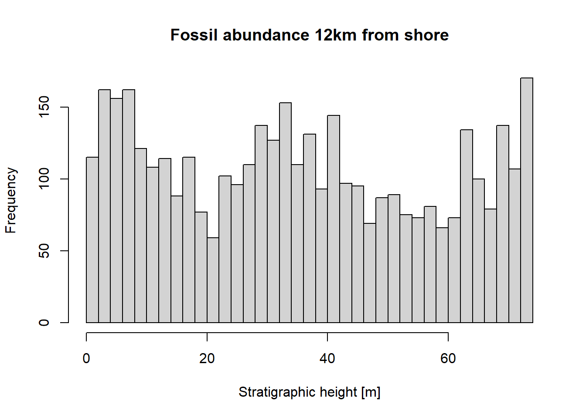
The constant fossil abundance in the time domain is expressed as irregular patterns in the stratigraphic domain, with increased irregularity when the number of simulated fossils (rate) is low. Peaks in fossil abundance correspond to decreased sediment accumulation as accomodation space is rapidly filled when the platform is flooded. Notably, hiatuses do not cause any peaks in fossil abundance, as we specified that fossils coindicing with gaps will be destroyed (option destructive = TRUE).
Solution Task 3.2: Ecological controls on fossil abundance.
Define a niche for a taxon, and add the niche model to your pipeline. - How and why do your results change? - How could you misinterpret the results?
pos ="2km"# select position on the platformstopifnot(pos %in% dist) # check validityadm = adm_list[[pos]] # select age-depth modelrate =200# no. of fossils per Myr# define nicheniche =snd_niche(opt =20, tol =10, cutoff_val =0)# plot nichemax_wd =60# maximum water depth for plottingx =seq(-2, max_wd, by =0.1)plot(x, niche(x),type ="l",xlab ="Water depth [m]",ylab ="Collection probability",main ="Collection probability of taxon")
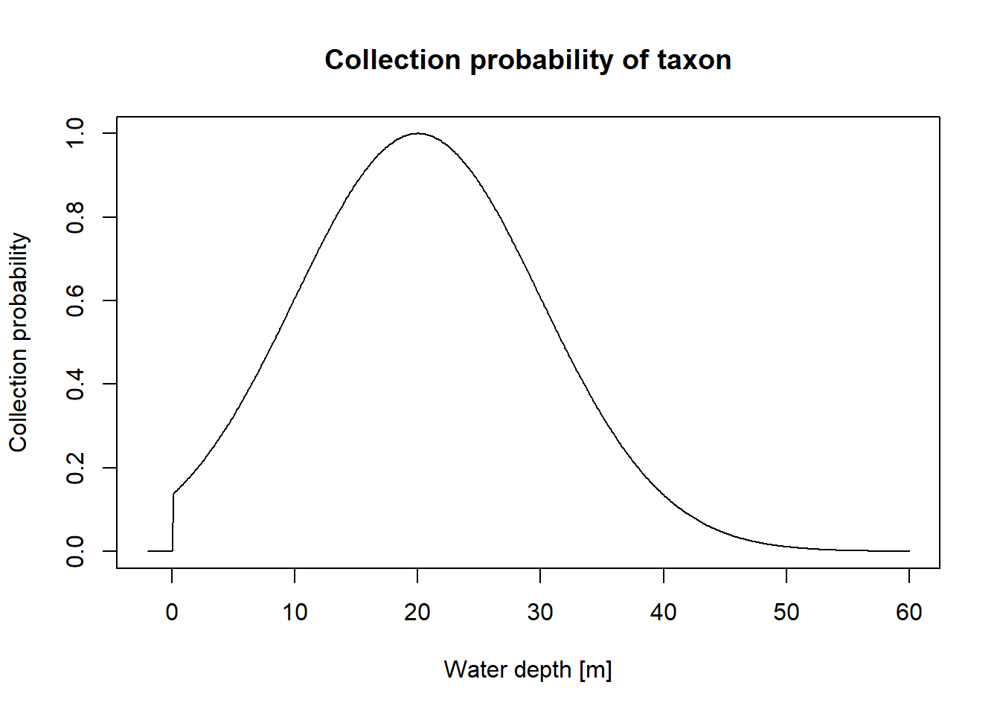
## change in cline with timet = scenarioA$t_myr # time steps where the water depth is determined by the modelwd = scenarioA$wd_m[,pos] # water depth at the specified positionwd_with_time =approxfun(t, wd)## Plottingplot(x = t,y =wd_with_time(t), type ="l", xlab ="Time [Myr]",ylab ="Water depth [m]",main =paste0("Water depth ", pos, " offshore"))
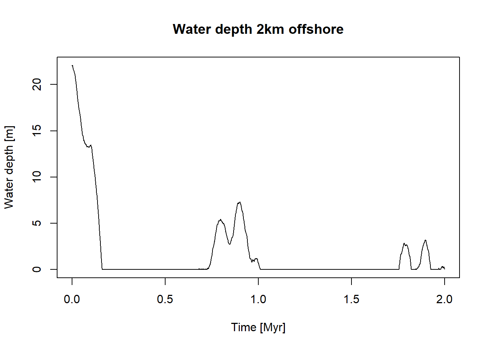
## add niche model to pipelinep3(rate = rate, from =min_time(adm), to =max_time(adm)) |># model occurrences based on constant rateapply_niche(niche_def = niche, gc = wd_with_time) |># apply niche modeltime_to_strat(adm, destructive =TRUE) |># transform into strat. domain, destroy fossils that coincide with hiatuses hist(xlab =paste0("Stratigraphic height [",get_L_unit(adm) ,"]"), # plot resultsmain =paste0("Fossil abundance ", pos, " from shore"),ylab ="# Fossils",breaks =seq(from =min_height(adm), to =max_height(adm), length.out =40))
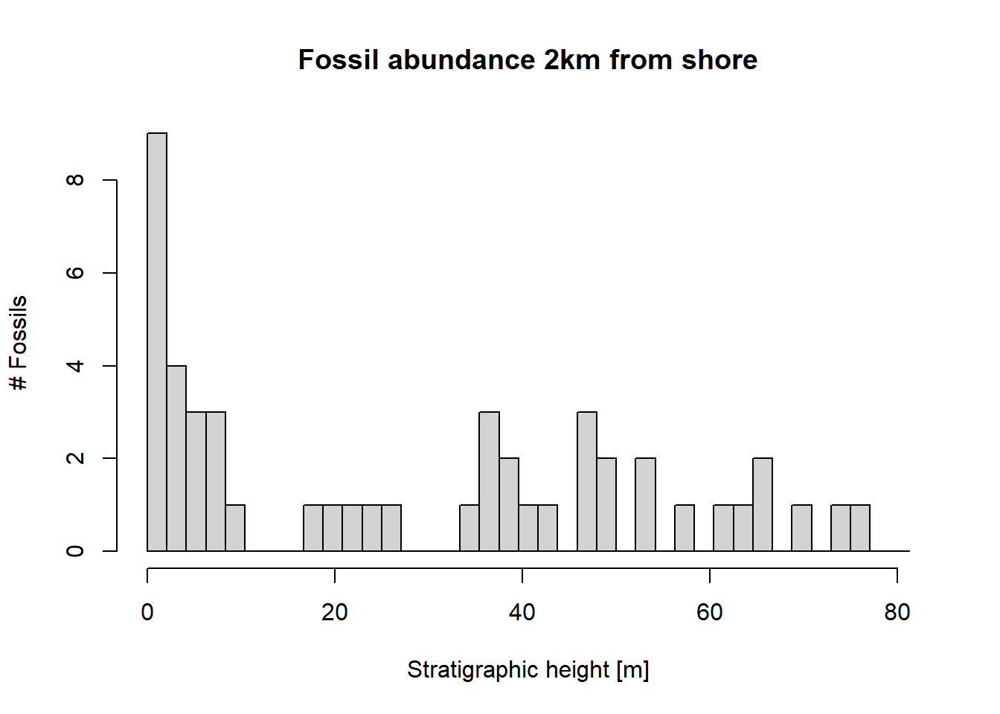
Depending on the preferred water depth and tolerance to water depth changes, it can appear as if the taxon goes extinct because fossil abundance drops to 0. However, this is because the taxon tracks its niche, and there is a systematic change in water depth with time.
For example, the water depth on the platform decreases with time, as the carbonate production rate outpaces the subsidence. As a result, taxa with low tolerance to shallow water will vanish over time from the platform top. Conversely, the water depth on the slope increase with time. This leads to the local extinction (extirpation) of shallow water taxa on the slope as time progresses. However, this local extinction does not mean that the taxon is extinct, just that the environment at that location became unfavorable for it. Without the ability to examine multiple sections in the samples, this might be mistaken as a true extinction event.
Solution Task 3.3: Last occurrences and artefactual mass extinctions
Simulate last occurrences based on the assumption of a constant rate of last occurrences and transform them into the stratigraphic domain
Where do you observe clusters of last occurrences?
With what stratigraphic effects are these locations associated?
How would you misinterpret the results in the absence of stratigraphic information? Use your results to formulate a “stratigraphic null hypothesis” for clusters of last occurrences.
pos ="2km"# position along the onshore-offshore gradientstopifnot(pos %in% dist) # validity checkadm = adm_list[[pos]] # select age-depth modelrate =100# last occurrences per Myrbinsize =2# size of sampling bins [m]# Plot last occurrences at the specified positionp3(from =min_time(adm), to =max_time(adm), rate = rate) |>time_to_strat(adm, destructive =FALSE) |>hist(breaks =seq(from =min_height(adm), to =max_height(adm) + binsize, by = binsize),xlab ="Height [m]",main =paste0(" # Last occurrences ", pos, " from shore"))
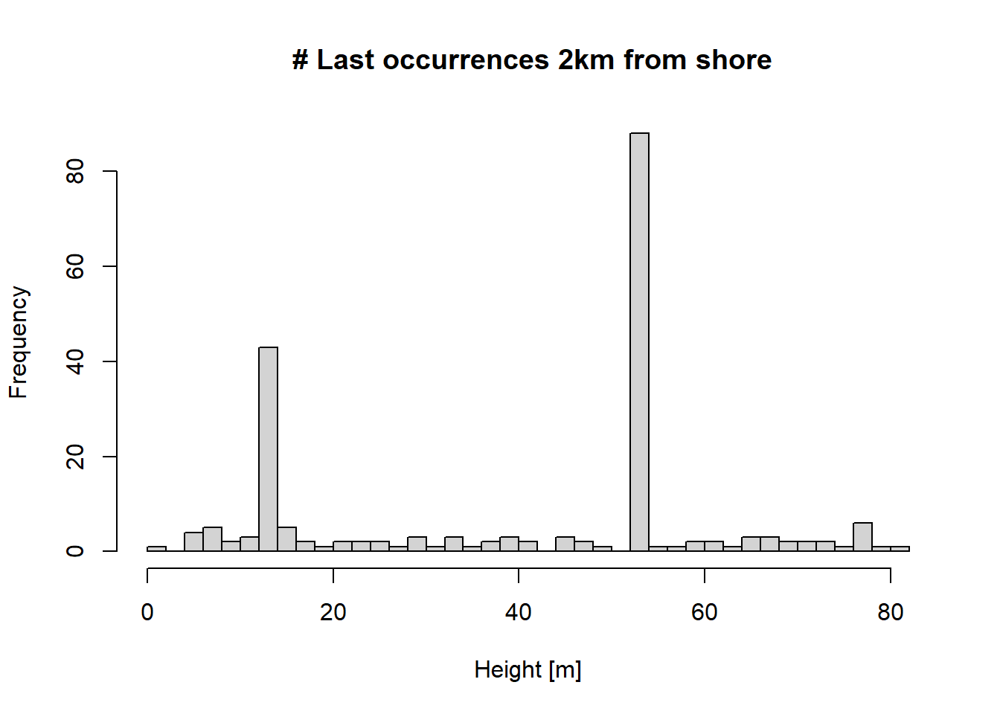
On the platform, the clusters are associated with prolonged hiatuses, caused by drops in sea level. On the slope, the clusters are associated with intervals of stratigraphic condensation (low sedimentation rate), also caused by drops in sea level.
In the absence of stratigraphic information, these clusters could be misinterpreted as extinction intervals, as there is an elevated rate of last occurrences. If information on sea level change is available, this could be misinterpreted as a causal relationship between sea level and extinction rate, where drops in sea level increase extinction rates.
A stratigraphic null hypothesis might be that times of dropping sea level cause hiatuses (close to shore) and condensation (on the slope), which lead apparent elevated extinction rates.
Solution Task 3.4: Biostratigraphic precision and range offset.
Explore how range offset changes with the true time of extinction, fossil abundance, and position along shore.
Where and why is biostratigraphic precision best/worst?
How do your results change when you add a niche model to your code?
To generate more simulations, we write a wrapper function that draws range offset 1000 times for any given parameter choice:
sample_range_offset =function(t_ext, rate, adm, n_rep =1000){ t =rep(NA, n_rep) h =rep(NA, n_rep)for (i in1:n_rep){ x =range_offset(t_ext = t_ext, rate = rate, adm = adm) t[i] = x["t"] h[i] = x["h"] }return(list(t = t, h = h))}adm = adm_list[["2km"]]t_ext =1.5rate =5range_offsets =sample_range_offset(t_ext, rate, adm)hist(range_offsets$h,xlab ="Range offset [m]",main ="Biostratigraphic precision/Stratigraphic range offset")
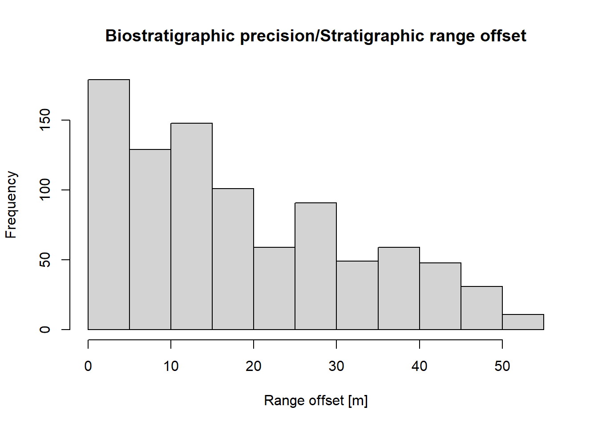
hist(range_offsets$t,xlab ="Range offset [Myr]",main ="Biostratigraphic precision/Temporal range offset")
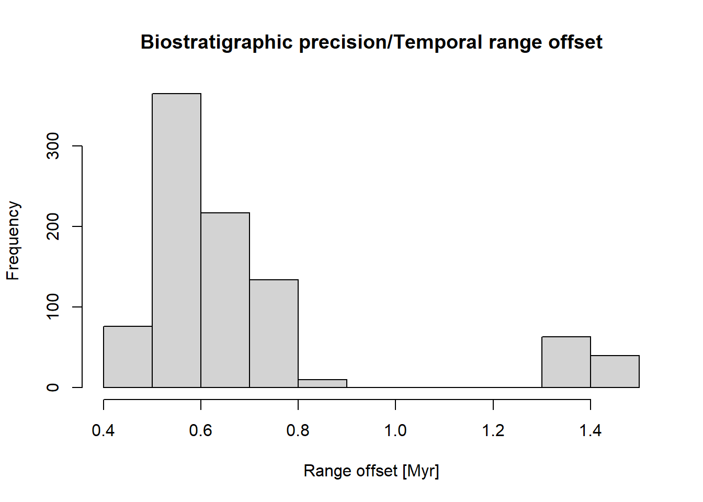
Running this code across the platform with varying rates and true extinction times, the following patterns emerge:
Range offset increases as fossil abundance decreases - the fewer fossils there are to find the further the last observed occurrence will be from the true extinction, an effect called the Signor-Lipps effect (Signor et al. 1982)
Temporal range offset is highest when the true extinction lies at the end of a gap. As a result, range offset is highest on the platform top in the presence of prolonged hiatuses caused by drops in sea level
Adding niche models to the code does further increase the range offset (and, as a result, decrease stratigraphic precision) as it further decreases fossil abundance, and adds extirpation effects to range offset.
References
Hohmann, Niklas, and Emilia Jarochowska. 2025. “StratPal: An r Package for Creating Stratigraphic Paleobiology Modelling Pipelines.”Methods in Ecology and Evolution 16 (4): 678–86. https://doi.org/https://doi.org/10.1111/2041-210X.14507.
Signor, Philip W, Jere H Lipps, Leon T Silver, Peter H Schultz, and others. 1982. “Sampling Bias, Gradual Extinction Patterns and Catastrophes in the Fossil Record.”Geological Society of America Special Paper 190 (291): e296.